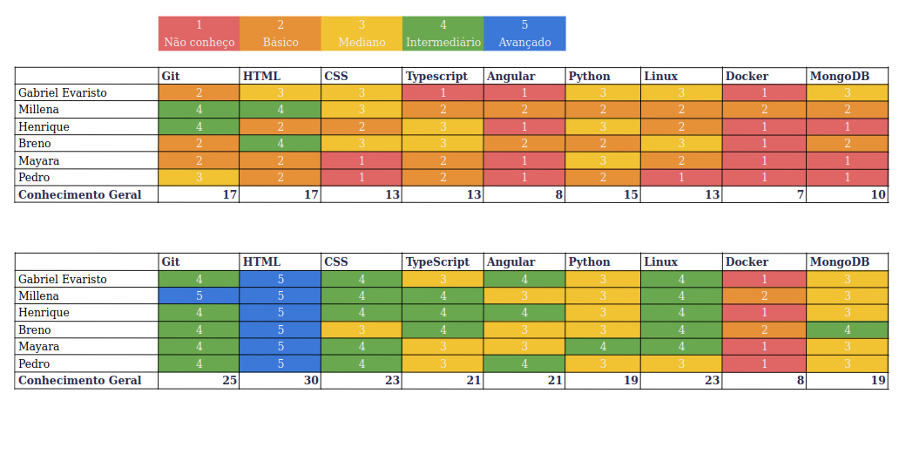

Este documento tem por finalidade fornecer uma avaliação crítica quanto ao projeto, realizado na etapa final, é de suma importância sua leitura, pois ele contém informações cruciais para auxiliar no desenvolvimento de projetos futuros.
PONTOS DO PROJETO
Positivos
Negativos
CONSELHOS
FEELING INDIVUDUAL
Mayara Alves
Essa foi minha primeira experiência trabalhando em um projeto de software em equipe foi uma jornada de aprendizado e crescimento pessoal e profissional. Desde o início, percebi que a colaboração e o trabalho em equipe eram fundamentais para o sucesso do projeto.
No começo, enfrentamos desafios comuns de uma equipe inexperiente. Porém, isso nos permitiu aprender juntos, trocar conhecimentos e nos adaptar às demandas do projeto. Aprendemos sobre metodologias ágeis,
como o Scrum, e como dividir tarefas e responsabilidades entre os membros da equipe. A comunicação efetiva se tornou uma prioridade, garantindo que todos estivessem alinhados, compartilhando informações relevantes e resolvendo problemas de forma colaborativa.
Ao longo do projeto, enfrentamos obstáculos técnicos e tomadas de decisões desafiadoras. A necessidade de aprender novas tecnologias, foi assustadora no início, mas com o apoio da equipe, fomos capazes de superar
esses desafios e expandir nossas habilidades técnicas.
Além disso, trabalhar em um ambiente de projeto de software em equipe me permitiu adquirir valiosas habilidades profissionais. Aprendi a ser mais organizado, a gerenciar meu tempo de forma eficiente e a priorizar tarefas importantes. A comunicação
clara e efetiva com os colegas de equipe se tornou uma parte essencial do meu trabalho, melhorando minha capacidade de expressar minhas ideias e ouvir as perspectivas dos outros.
Essa experiência também me ensinou a importância da responsabilidade individual e do comprometimento com os prazos e objetivos estabelecidos. Aprender a lidar com a pressão e a trabalhar de forma produtiva sob limitações de tempo foi um desafio, mas essencial para o meu crescimento profissional.
No final do projeto, pude ver o quanto cresci pessoal e profissionalmente. A experiência de trabalhar em equipe me deu confiança nas minhas habilidades e me permitiu explorar diferentes áreas do desenvolvimento de software.
Aprendi a valorizar a importância do trabalho em equipe, da comunicação efetiva e do compartilhamento de conhecimento.
Millena Queiroz
MDS foi muito enriquecedor para minha formação profissional na área de desenvolvimento de software. Ao explorar essa disciplina, pude aprofundar meu conhecimento sobre as práticas e técnicas que são usadas no mercado, principalmente no que diz respeito a qualidade de software que é minha área de interesse.
A aplicação dos métodos ágeis durante o curso foi algo super positivo. A gente consegue notar a diferença ao comparar com trabalhos de outras disciplinas que não aplicamos esses métodos.
Outro aspecto bacana foi a introdução ao sistema operacional Linux, confesso que eu tinha muito receio quanto a trocar de SO, mas valeu muito a pena.
Apesar das dificuldades em conciliar as disciplinas que exigiam entrega de projetos, considero q a matéria foi essencial para minha trajetória profissional.
na área de qualidade de software. Isso serve até de conselho: Dificilmente conseguiremos nos aprofundar em todas as habilidades (front, back, devops…), então algo que tirei de lição também foi que é muito importante ter noção de todas essas áreas,
mas usar a disciplina a seu favor também, para investir e se aprofundar naquilo que você pretende seguir como carreira (mas sempre alinhando com sua equipe).
Gostaria de agradecer muito a minha equipe que sempre se esforçou bastante nas entregas, apoiaram bastante uns aos outros e que deram seu melhor (apesar do semestre caótico :p).
Breno Queiroz
A matéria de MDS é excelente para o desenvolvimento do aluno, pois aproxima o discente da vivência do mercado de trabalho. O desenvolvimento do projeto utilizando práticas agéis trás um crescimento muito grande em soft skills. E a metodologia, que deixa o grupo decidir quais tecnologias usar, ajuda os alunos a desenvolverem uma cultura autoditada, fundamental no mundo de software, onde novas tecnologias surgem a todo momento.
Henrique Torres
Essa foi a primeira disciplina que senti que teria um contato direto com um projeto de software
de verdade, as primeiras aulas me chamaram muito a atenção e estava muito ansioso para começar
a desenvolver. O meu grande impedimento na disciplina foi o fato de eu ter começado a estagiar, me tomou muito
tempo de estudo, pois tive que aprender muitas coisas em um curto período de tempo, então acabei sugerindo
para o grupo que usassemos Angular para desenvolver o frontend do projeto, pois é o mesmo framework que uso no
estágio, logo já pouparia um pouco de tempo de aprendizado.
No começo foi bem cansativo eram muitas coisas novas para aprender, mas o que mais me motivava era
que eu via sobre algo no estágio e logo em seguida tinha uma aula de MDS sobre o mesmo tema, então isso foi
muito legal. Essa matéria foi, até então, a disciplina que eu sinto que mais absorvi conhecimentos práticos
,como por exemplo, ferramentas de versionamento, métodos ágeis, o que é e como funciona uma API e entre outras
coisas, foi muito produtivo.
Tentei contribuir ao máximo com o projeto, por sorte peguei um ótimo grupo, todo mundo sintonizou muito
bem e conseguiu colaborar bastante e por isso a gente conseguiu desenvolver em uma velocidade razoável. Porém eu
senti que, infelizmente, um dos membros do nosso grupo acabou ficando mais sobrecarregado que os outros, mas não
sei dizer o porque disso ter acontecido. Concluindo, acredito que foi uma matéria muito produtiva e de bastante
aprendizado.
Pedro Henrique
Foi minha primeira experiência de fato trabalhando em um projeto com significado e em conjunto e por conta
disso estava muito nervoso, não conhecia nenhuma das linguagens que íamos trabalhar e tive que aprender tudo do 0, além disso toda aquela pressão e fama que já existe ao redor da matéria sobre ela ser muito trabalhosa e difícil.
Porém, conforme o projeto foi andando descobri que podia contar muito com os companheiros do meu grupo,
todos eles me ajudaram muito com coisas que eu não sabia ou estava errando, por isso uma das maiores lições que levarei desse projeto com certeza seria a comunicação, pedir ajuda quando não sabe, ajudar
sempre que puder e acima de tudo sempre comunicar sobre o que está fazendo, impedimentos e o que pretende fazer, que foi uma das coisas que tive alguns problemas durante o projeto.
Apesar de tudo isso, foi uma experiência extremamente significativa para mim, consegui aprender muito,
tanto com a matéria em si quanto com o projeto e principalmente com as experiências que tive com o grupo e por isso acredito que tenha sido matéria mais marcante para mim em minha formação até agora.
Gabriel Evaristo
No começo da disciplina confesso que dei uma patinada. Mas com um certo esforço, juntamente com o apoio da minha equipe, que por sinal foi excelente, consegui alinhar o conhecimento com os demais.
atuei principalmente na área do front-end, e adorei a metodologia da disciplina, graças à ela, o trabalho se tornou dinâmico e, certamente, satisfatório de realizá-lo.
Embora tenha sido um período extremamente desafiador, com diversas disciplinas que demandaram muito esforço, hoje sinto uma imensa satisfação, uma sensação de sucesso e gratidão pela minha incrível equipe. Além disso, percebo que amadureci não apenas como desenvolvedor, mas também como pessoa.
Essa experiência renovou minhas energias para prosseguir com a faculdade, e por isso sou profundamente grato.
CONHECIMENTOS ADQUIRIDOS
Acompanhe o desenvolvimento dos integrantes no grupo na autoavaliação de conhecimentos, desde o ínicio da disciplina até agora:
